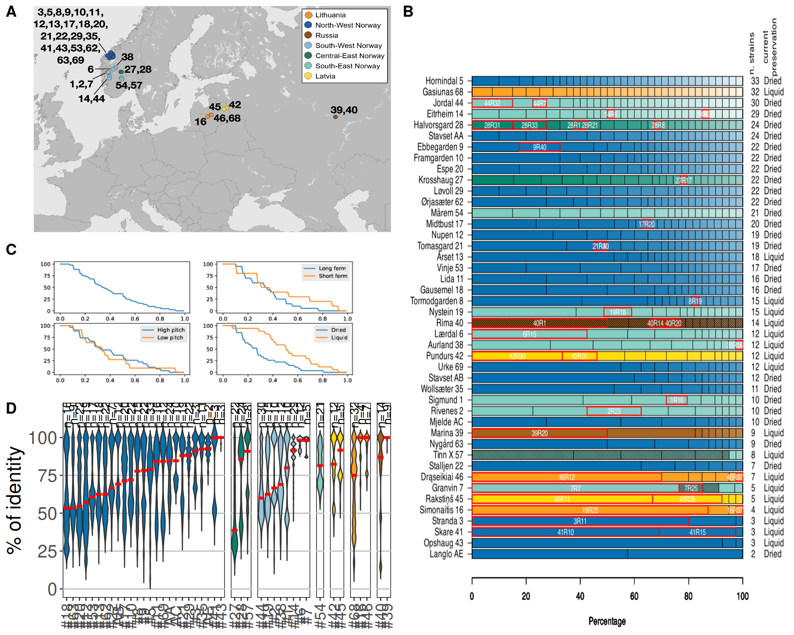

6 Figure 1
6.1 Figure 1 code
6.1.1 Panel B code
library(Cairo)
# make color palettes
'NW' = colorRampPalette(c('#0571B0', 'white'))(37)
'SW' = colorRampPalette(c('#92C5DE', 'white'))(37)
'CE' = colorRampPalette(c('#018571', 'white'))(37)
'SE' = colorRampPalette(c('#80CDC1', 'white'))(37)
'LAT' = colorRampPalette(c('#FFDA00', 'white'))(37)
'LIT' = colorRampPalette(c('#FBA01D', 'white'))(37)
'RUS' = colorRampPalette(c('#A6611A', 'white'))(37)
# Make a horizontal stacked barplot
mydata <- rev(read.csv('Diversity data for R.csv', header = TRUE, encoding = 'UTF-8'))
mymatrix <- as.matrix(mydata[1:37,])
tempmatrix <- mymatrix
tempmatrix[,] <- 0
cairo_pdf('Strain Diversity updated 2.pdf', height = 10, width = 10)
# note using cairo_pdf to print special characters correctly
# plot empty chart
par(xpd = TRUE, mar = c(4, 8, 4, 10) + 0.1)
b <- barplot(tempmatrix, horiz = TRUE, las = 1, xlab = 'Percentage', main = 'Strain diversity of farmhouse ale cultures', yaxt = 'n',
col = RUS, xlim = c(0,100))
# plot Russian
par(new = TRUE)
tempmatrix[,c("X39","X40")] <- mymatrix[,c("X39","X40")]
b <- barplot(tempmatrix, horiz = TRUE, las = 1, xaxt = 'n', yaxt = 'n',
col = RUS, xlim = c(0,100))
tempmatrix[,] <- 0
# plot Lithuanian
par(new = TRUE)
tempmatrix[,c("X16","X46", "X68")] <- mymatrix[,c("X16","X46", "X68")]
b <- barplot(tempmatrix, horiz = TRUE, las = 1, xlab = 'Percentage', main = 'Strain diversity of farmhouse ale cultures', yaxt = 'n',
col = LIT, xlim = c(0,100))
tempmatrix[,] <- 0
# plot Latvian
par(new = TRUE)
tempmatrix[,c("X42", "X45")] <- mymatrix[,c("X42", "X45")]
b <- barplot(tempmatrix, horiz = TRUE, las = 1, xlab = 'Percentage', main = 'Strain diversity of farmhouse ale cultures', yaxt = 'n',
col = LAT, xlim = c(0,100))
tempmatrix[,] <- 0
# plot Central European
par(new = TRUE)
tempmatrix[,c("X27", "X28")] <- mymatrix[,c("X27", "X28")]
b <- barplot(tempmatrix, horiz = TRUE, las = 1, xlab = 'Percentage', main = 'Strain diversity of farmhouse ale cultures', yaxt = 'n',
col = CE, xlim = c(0,100))
tempmatrix[,] <- 0
# plot Southern European
par(new = TRUE)
tempmatrix[,c("X54", "X57")] <- mymatrix[,c("X54", "X57")]
b <- barplot(tempmatrix, horiz = TRUE, las = 1, xlab = 'Percentage', main = 'Strain diversity of farmhouse ale cultures', yaxt = 'n',
col = SE, xlim = c(0,100))
tempmatrix[,] <- 0
# plot North western
par(new = TRUE)
tempmatrix[,c("AA", "X29", "X53", "X11", "X5", "X62", "X17", "X21", "X12", "X63",
"X69", "X9", "X20", "X13", "X18", "X10", "X22", "AB", "X8", "X35",
"AC", "AE", "X43", "X3", "X41")] <- mymatrix[,c("AA", "X29", "X53",
"X11", "X5", "X62", "X17", "X21", "X12", "X63",
"X69", "X9", "X20", "X13", "X18", "X10", "X22", "AB", "X8", "X35",
"AC", "AE", "X43", "X3", "X41")]
b <- barplot(tempmatrix, horiz = TRUE, las = 1, xlab = 'Percentage', main = 'Strain diversity of farmhouse ale cultures', yaxt = 'n',
col = NW, xlim = c(0,100))
tempmatrix[,] <- 0
# plot South western
par(new = TRUE)
tempmatrix[,c("X19", "X38", "X44", "X14", "X6", "X1", "X2", "X7")] <- mymatrix[,c("X19", "X38", "X44", "X14", "X6", "X1", "X2", "X7")]
b <- barplot(tempmatrix, horiz = TRUE, las = 1, xlab = 'Percentage', main = 'Strain diversity of farmhouse ale cultures', yaxt = 'n',
col = SE, xlim = c(0,100))
tempmatrix[,] <- 0
# label axis
axis(4,at = b, mydata[42,], tick = FALSE, line = 0, cex.axis = 1, las = 2)
text(103.4, b[44]+3, 'n. strains', cex = 1, srt = 90)
axis(2,at = b, mydata[43,], line = 0, cex.axis = 1, las = 1)
text(110, b[44]+3.7, 'current\npreservation', cex = 1, srt = 90)
axis(4,at = b, mydata[44,], tick = FALSE, line = +1.5, cex.axis = 1, las = 2)
text(120, b[44]+3.7, 'historic\npreservation', cex = 1, srt = 90)
axis(4,at = b, mydata[45,], tick = FALSE, line = +4.5, cex.axis = 1, las = 2)
# Read the table into a data frame
strain_data <- read.csv("sequenced_strains.csv", stringsAsFactors = FALSE)
# Extract the columns as vectors
strain_list <- strain_data$strain
group_index_list <- strain_data$group_index
strain_name_list <- strain_data$strain_name
# Loop over strains to highlight and add labels
for (i in seq_along(strain_list)) {
strain <- strain_list[i]
group_index <- group_index_list[i]
strain_name <- strain_name_list[i]
# Find the strain index in mydata
strain_index <- match(strain, names(mydata))
if (is.na(strain_index)) next # Skip if strain not found
# Get y-coordinates for the bar
y_bottom <- b[strain_index] - 0.47 # Adjust for bar width
y_top <- b[strain_index] + 0.47
# Calculate x-coordinates for the specific group_index
if (group_index == 1) {
x_start <- 0 # No preceding groups
} else {
x_start <- sum(as.numeric(mymatrix[1:(group_index - 1), strain_index]), na.rm = TRUE)
}
x_end <- x_start + as.numeric(mymatrix[group_index, strain_index])
# Highlight the specific portion
rect(x_start, y_bottom, x_end, y_top, border = "red", lwd = 2)
# Add the text label
x_mid <- (x_start + x_end) / 2 # Midpoint for the label
text(x_mid, (y_bottom + y_top) / 2 - 0.1, strain_name, col = "white", cex = 0.8)
}
dev.off()6.1.2 Panel C code
'''
The CSV file comes from Peter's Google spreadsheet for fig 1B.
'''
import sys, csv, re
# --- FUNCTIONS
REG_CULTURE = re.compile('(\\d+|A[ABCDEF])(P|R)\\d+')
def get_culture(strain_name):
m = REG_CULTURE.match(strain_name)
if m:
c = m.group(1)
return c if len(c) == 2 else '0' + c
def is_picked(strain):
return 'P' in strain
# --- SPLIT BY CULTURE
by_culture = {}
for (strain, group, intragroup, culture, no) in csv.reader(open(sys.argv[1])):
if is_picked(strain) or strain == 'strain':
continue
c = get_culture(strain)
if c not in by_culture:
by_culture[c] = []
by_culture[c].append((strain, group))
# --- FIND PROPORTION PR CULTURE
proportions = []
culture_codes = sorted(list(by_culture.keys()))
for c in culture_codes:
strains = len(by_culture[c])
group_counts = {}
for (strain, group) in by_culture[c]:
group_counts[group] = group_counts.get(group, 0) + 1
biggest = max(group_counts.values())
print(c, biggest, biggest / strains)
proportions.append((c, biggest / strains ))
bare_props = [p for (_, p) in proportions]
# --- PREP
from matplotlib import pyplot
fig, ((one_ax1, one_ax2), (two_ax1, two_ax2)) = pyplot.subplots(2, 2)
fig.set_size_inches(10, 4)
# this is for four panels
#pyplot.figtext(0.075, 0.9, 'A', {'size' : 16})
#pyplot.figtext(0.075, 0.47, 'C', {'size' : 16})
#pyplot.figtext(0.5, 0.9, 'B', {'size' : 16})
#pyplot.figtext(0.5, 0.47, 'D', {'size' : 16})
# fig, (single_ax, two_ax1, two_ax2) = pyplot.subplots(1, 3, sharex = True,
# sharey = True,
# figsize = [12, 4])
# # pyplot.figtext(0.075, 0.9, 'C', {'size' : 16})
# # pyplot.figtext(0.375, 0.9, 'D', {'size' : 16})
# # pyplot.figtext(0.65, 0.9, 'E', {'size' : 16})
# --- PLOT THE HISTOGRAM
# http://matplotlib.org/1.2.1/examples/pylab_examples/histogram_demo.html
pyplot.style.use('ggplot')
if False:
(n, bins, patches) = ax1.hist(bare_props, 10)
#pyplot.title('Proportion of dominant strain in culture')
ax1.set_ylabel('Number of cultures')
ax1.set_xlabel('Proportion')
#pyplot.show()
# --- PLOT THE SINGLE-LINE PLOT
#pyplot.clf()
def find_cultures(proportions, min_proportion):
return 100 * len([v for v in proportions if v >= min_proportion]) / len(proportions)
x = [v / 100 for v in range(100)]
y = [find_cultures(bare_props, v) for v in x]
one_ax1.plot(x, y)
#pyplot.title('Proportion of dominant strain in culture')
#one_ax1.set_ylabel('% of cultures')
#two_ax1.set_xlabel('Proportion')
# single_ax.set_xlabel('Min proportion')
#pyplot.show()
# --- TWO-LINE PLOT FOR PETER
#pyplot.clf()
def two_line_plot_drying(ax, field_name):
preservation = {
row['culture'].zfill(2) : row[field_name] for row
in csv.DictReader(open('culture-data.csv'))
}
props_dry = [p for (c, p) in proportions if preservation[c] == 'Dried']
props_liq = [p for (c, p) in proportions if preservation[c] == 'Liquid']
two_line_plot(ax, props_dry, props_liq, 'Dried', 'Liquid')
def two_line_plot(ax, props1, props2, l1, l2):
def find_cultures(proportions, min_proportion):
return 100 * len([v for v in proportions if v >= min_proportion]) / len(proportions)
x = [v / 100 for v in range(100)]
y1 = [find_cultures(props1, v) for v in x]
y2 = [find_cultures(props2, v) for v in x]
ax.plot(x, y1, label = l1)
ax.plot(x, y2, label = l2)
ax.legend()
# ----- T-TEST
from scipy import stats
print('---', l1, l2)
out = stats.ttest_ind(props1, props2)
print(out)
out = stats.mannwhitneyu(props1, props2)
print(out)
def to_float(pitch):
return float(pitch) if pitch else None
def two_line_plot_pitch(ax):
pitch = {
row['culture'].zfill(2) : to_float(row['pitch']) for row
in csv.DictReader(open('culture-data.csv'))
}
props_hi = [p for (c, p) in proportions if pitch[c] and pitch[c] >= 30]
props_lo = [p for (c, p) in proportions if pitch[c] and pitch[c]< 30]
two_line_plot(ax, props_hi, props_lo, 'High pitch', 'Low pitch')
def two_line_plot_ftime(ax):
ftime = {
row['culture'].zfill(2) : to_float(row['fermtime']) for row
in csv.DictReader(open('culture-data.csv'))
}
SPLIT = 60
props_ln = [p for (c, p) in proportions if ftime[c] and ftime[c] >= SPLIT]
props_sh = [p for (c, p) in proportions if ftime[c] and ftime[c]< SPLIT]
two_line_plot(ax, props_ln, props_sh, 'Long ferm', 'Short ferm')
#two_line_plot_drying(two_ax1, 'preservation')
two_line_plot_ftime(one_ax2)
two_line_plot_pitch(two_ax1)
two_line_plot_drying(two_ax2, 'received')
#pyplot.show()
pyplot.savefig('dominant-strain.nolabels.pdf', format = 'pdf', dpi = 288) # dpi = 288 * 26.1.3 Panel D code and merge
# get panel A
panel_a = ggplot2::ggplot() + ggplot2::annotation_custom(
grid::rasterGrob(
magick::image_read("data/p02-01/fig-1A-map-with-numbers.png"),
width = ggplot2::unit(1, "npc"),
height = ggplot2::unit(1, "npc")),
-Inf, Inf, -Inf, Inf)
#==============================================================================#
# 2 - Load Panel B ####
# get panel B
panel_b = ggplot2::ggplot() + ggplot2::annotation_custom(
grid::rasterGrob(
magick::image_read("data/p02-01/Strain Diversity updated 2 - notitle.png"),
width = ggplot2::unit(1,"npc"),
height = ggplot2::unit(1,"npc")),
-Inf, Inf, -Inf, Inf)
#==============================================================================#
# 3 - Load Panel C ####
# get panel C
panel_c = ggplot2::ggplot() + ggplot2::annotation_custom(
grid::rasterGrob(
magick::image_read("data/p02-01/dominant-strain.nolabels.pdf"),
width = ggplot2::unit(1,"npc"),
height = ggplot2::unit(1,"npc")),
-Inf, Inf, -Inf, Inf)
#==============================================================================#
# 4 - Panel D - Cultures' Violin Plots ####
#------------------------------------------------------------------------------#
## 4.1 - Import data and prep data ####
# import and prep data
raw_data = read.delim("./data/p02-01/grouped phenotype data with annotations.csv", sep = ",", header = TRUE)
raw_data = raw_data %>%
dplyr::filter(group != "WL004") %>%
dplyr::filter(group != "LA001")
raw_data$Industry = ifelse(
raw_data$region %in% c("South-West Norway", "Lithuania", "North-West Norway", "Russia",
"Central-Eastern Norway", "Latvia", "South-Eastern Norway"),
"Farmhouse",
raw_data$region
)
raw_data$Industry = ifelse(
raw_data$Outside == "yes",
"Outside",
raw_data$Industry
)
raw_data$region = ifelse(
raw_data$Industry == "Farmhouse",
raw_data$region,
"NA"
)
raw_data$region = ifelse(
raw_data$culture %in% c("7", "38"),
"South-West Norway",
ifelse(
raw_data$culture == "40",
"Russia",
ifelse(
raw_data$culture == "45",
"Latvia",
ifelse(
raw_data$culture == "57",
"Central-Eastern Norway",
raw_data$region
)
)
)
)
metadata = raw_data %>%
dplyr::select(c("group", "culture", "region", "Industry", "Outside", "method"))
rownames(metadata) = metadata$group
rownames(raw_data) = raw_data$group
counts = raw_data %>%
dplyr::select(-c("group", "culture", "region", "Industry", "Outside", "method"))
## farmhouse focus
metadata_farm_only = metadata[which(metadata$Industry %in% c("Farmhouse", "Outside")), ]
counts_farm_only = counts[which(rownames(counts) %in% metadata_farm_only$group), ]
## import cultures
cultures_metadata = read.delim("./data/p02-01/datakveikculture/culture-data.csv", sep = ",", header = TRUE)
cultures_db = data.frame(culture = character(), value = numeric())
culture_files = list.files(
path = "./data/p02-01/datakveikculture/",
pattern = ".txt",
all.files = FALSE,
full.names = TRUE
)
# import data
for(infile in culture_files){
culture_name = stringr::str_remove(infile, "./data/p02-01/datakveikculture//") %>%
stringr::str_remove(".txt")
tmp_df = utils::read.delim(infile, sep = "\t", header = FALSE)
for(k in 2:ncol(tmp_df)){
tmp_df[k-1, k] = NA
}
tmp_df = tmp_df %>%
reshape::melt() %>%
stats::na.omit() %>%
dplyr::filter(value != 0)
tmp_df$culture = culture_name
tmp_df = tmp_df %>%
dplyr::select("culture", "value")
cultures_db = rbind(cultures_db, tmp_df)
}
cultures_db = dplyr::left_join(cultures_db, metadata_farm_only)
cultures_db$region = stringr::str_replace_all(cultures_db$region, " ", "\n")
cultures_db$region = factor(
cultures_db$region,
levels = c("North-West\nNorway", "Central-Eastern\nNorway", "South-West\nNorway",
"South-Eastern\nNorway", "Latvia", "Lithuania", "Russia")
)
cultures_db$culture = ifelse(
cultures_db$culture %in% c("AA", "AB", "AC", "AE"),
cultures_db$culture,
paste0("#", cultures_db$culture)
)
cultures_db$culture = factor(
cultures_db$culture,
levels = c(
"#1", "#2", "#3", "#5", "#6", "#7", "#8", "#9",
"#10", "#11", "#12", "#13", "#14", "#16", "#17", "#18", "#19",
"#20", "#21", "#22", "#27", "#28", "#29",
"#35", "#38", "#39",
"#40", "#41", "#42", "#43", "#44", "#45", "#46",
"#53", "#54", "#57",
"#62", "#63", "#68", "#69",
"AA", "AB", "AC", "AE")
)
counts_data = data.frame(
label = c(
"n=16", "n=9", "n=22", "n=19", "n=17", "n=18", "n=22", "n=7", "n=12", "n=20", "n=22", "n=15", "n=22", "n=33", "n=16", "n=12", "n=24", "n=10", "n=19", "n=22", "n=3", "n=11", "n=2", "n=3", "n=3",
"n=22", "n=24", "n=8",
"n=30", "n=15", "n=10", "n=12", "n=10", "n=29", "n=12", "n=5",
"n=21",
"n=12", "n=5",
"n=32", "n=4", "n=7",
"n=14", "n=9"
),
x = c(1:25, 1:3, 1:8, 1, 1:2, 1:3, 1:2),
y = rep(115, 44),
region = c(rep("North-West\nNorway", 25), rep("Central-Eastern\nNorway", 3), rep("South-West\nNorway", 8),
"South-Eastern\nNorway", rep("Latvia", 2), rep("Lithuania", 3),rep("Russia", 2))
)
counts_data$region = factor(
counts_data$region,
levels = c("North-West\nNorway", "Central-Eastern\nNorway", "South-West\nNorway",
"South-Eastern\nNorway", "Latvia", "Lithuania", "Russia")
)
p_violins = ggplot(cultures_db, aes(x = forcats::fct_reorder(culture, value, median), y = value)) +
geom_violin(aes(fill = region),
scale = "width",
trim = FALSE) +
geom_text(data = counts_data, mapping = aes(x = x, y = y, label = label), angle = 90) +
stat_summary(fun = "median", colour = "red", geom = "crossbar") +
facet_grid(~ region, scales = "free_x", space = "free") +
scale_y_continuous(limits = c(0, 117), breaks = c(0, 25, 50, 75, 100)) +
scale_fill_manual(values = c('#0571B0', "#008470", '#92C5DE', "#80CDC1", "#FFDA00", '#FBA01D', '#A6611A')) +
labs(title = "Similarities within cultures",
y = "% of identity") +
theme(title = element_blank(),
axis.text.x = element_text(vjust = 0.5, angle = 90, size = 14),
axis.text.y = element_text(size = 16),
axis.title.x = element_blank(),
axis.title.y = element_text(size = 18),
legend.position = "none",
panel.background = element_rect(colour = "black", fill = NA),
panel.grid.major.x = element_blank(),
panel.grid.minor.x = element_blank(),
panel.grid.major.y = element_line(colour = "grey75"),
panel.grid.minor.y = element_blank(),
strip.background = element_blank(),
strip.text = element_blank())
final_plot = cowplot::plot_grid(
cowplot::plot_grid(
cowplot::plot_grid(
NA, panel_a,
ncol = 2,
rel_widths = c(0.75, 10),
labels = c("A", NA)
),
panel_c,
p_violins,
nrow = 3,
rel_heights = c(1.5, 1, 1.5),
labels = c(NA, "C", "D")
), panel_b,
ncol = 2,
labels = c(NA, "B")
)6.2 Figure 1 plot

6.3 Session Information
Note
R version 4.3.2 (2023-10-31)
Platform: x86_64-conda-linux-gnu (64-bit)
Running under: openSUSE Tumbleweed
Matrix products: default
BLAS/LAPACK: /home/andrea/miniforge3/envs/moai/lib/libmkl_rt.so.2; LAPACK version 3.9.0
locale:
[1] LC_CTYPE=en_US.UTF-8 LC_NUMERIC=C
[3] LC_TIME=it_IT.UTF-8 LC_COLLATE=en_US.UTF-8
[5] LC_MONETARY=en_US.UTF-8 LC_MESSAGES=en_US.UTF-8
[7] LC_PAPER=en_US.UTF-8 LC_NAME=C
[9] LC_ADDRESS=C LC_TELEPHONE=C
[11] LC_MEASUREMENT=en_US.UTF-8 LC_IDENTIFICATION=C
time zone: Europe/Brussels
tzcode source: system (glibc)
attached base packages:
[1] stats graphics grDevices utils datasets methods base
other attached packages:
[1] RColorBrewer_1.1-3 ggtext_0.1.2 ggrepel_0.9.6 ggplot2_3.5.1
[5] forcats_1.0.0 dplyr_1.1.4 cowplot_1.1.3 Cairo_1.6-2
loaded via a namespace (and not attached):
[1] Matrix_1.6-5 gtable_0.3.6 jsonlite_1.8.9 compiler_4.3.2
[5] tidyselect_1.2.1 Rcpp_1.0.14 stringr_1.5.1 xml2_1.3.6
[9] magick_2.8.5 png_0.1-8 scales_1.3.0 yaml_2.3.10
[13] fastmap_1.2.0 lattice_0.22-6 reticulate_1.40.0 plyr_1.8.9
[17] R6_2.5.1 labeling_0.4.3 generics_0.1.3 knitr_1.49
[21] htmlwidgets_1.6.4 tibble_3.2.1 munsell_0.5.1 pillar_1.10.1
[25] rlang_1.1.5 reshape_0.8.9 stringi_1.8.4 xfun_0.50
[29] cli_3.6.3 withr_3.0.2 magrittr_2.0.3 digest_0.6.37
[33] grid_4.3.2 gridtext_0.1.5 lifecycle_1.0.4 vctrs_0.6.5
[37] evaluate_1.0.3 glue_1.8.0 farver_2.1.2 colorspace_2.1-1
[41] rmarkdown_2.29 tools_4.3.2 pkgconfig_2.0.3 htmltools_0.5.8.1